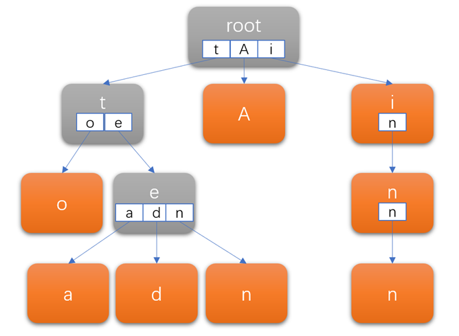
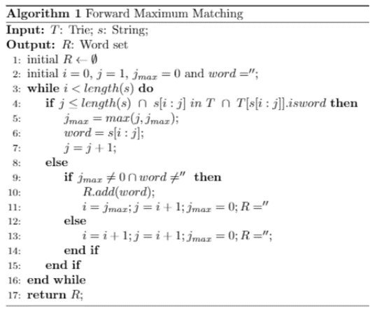

![UP: An example of HPO annotations for familial autoinflammatory syndrome 2 introduced by . As is shown in (C), one annotation mainly consists of a disease, a phenotype, and its clinical modifiers and courses (sub-ontologies). This example demonstrates that, in a publication on this disease, three of three reported patients were found to have episodic fever with infantile (or earlier) onset that was triggered by exposure to cold. General format of annotations is described in and https://hpo.jax.org/app/help/annotations. DOWN: An example of HPO ontology in OBO flat file format obtained from hp.obo which shows the properties of phenotype "Urinary urgency". OWL version of the HPO which contains more definitions like logical difinitions can be found in https://hpo.jax.org/app/download/ontology.](images/hpo annotation example.jpg)
Expert knowledge lies at the core of a medical intelligence system. For example, a doctor would know the proper questions to ask a patient if they want to diagnose a rheumatoid arthritis instead of a simple joint injury. This is also what we expect a medical question answering system would be able to do. A common way to equip machines with knowledge is through a knowledge graph composed of concepts and relations. As the opening part of this tutorial, this section introduces fundamental infrastructures in biomedical informatics, i.e., medical concepts and relations between them, along with the available resources.
For beginners in biomedical informatics, it is important to figure out the meaning of concept and relation. Let’s look at an example in our daily life. One day one of your friend feels ill and goes to see a doctor. They say I have a stomachache! It’s killing me! Then, the doctor tries to comfort them by saying Your stomach pain will be okay. It looks like a minor stomach disorder. In this case, we got three medical terms: stomachache, stomach pain, and stomach disorder. Moreover, we can find some connections between these terms:
The terms stomachache and stomach pain refer to the same syndrome (or concept).
The disease stomach disorder may cause stomachache.
First, it is obvious that stomachache and stomach pain refer to the same concept. Furthermore, with the exception of disease and symptom, every abstract medical entity can be regarded as a concept. They can be procedures, medicine, disorders, mental condition, etc.
Second, there is a relation called may_cause between stomach disorder and stomachache. This enables the doctor to make a diagnosis for your friend according to their symptoms and the relation between symptoms and diseases. Besides, there are a lot of other relations between concepts. For instance, Aspirin could relieve physical pain; Hypertensive disease may cause heart failure. These relations are crucial to biomedical informatics because they can reveal to us how medical concepts interact with each other.
In Section 2.1, we take an example from our daily life to help you understand the meaning of concept and relation. However, biomedical informaticsas an exclusively practical subject, derives its resources from various sources, including but not restricted to textbooks, Wikipedia, and electronic health records (EHR). There are thus great challenges to extracting concepts and relations from the resources, as they not only vary in text style and quality, but also in formats and structures. Therefore, we need a giant dictionary to help us deal with these problems.
In the example from the last section, it is obvious that stomachache and stomach pain refer to a same concept. However, if a researcher is dealing with EHRs from 10,000 patients, finding out all the mentions of the same concept will be arduous work because doctors may use various terms to refer to the same disease in their records such as type 2 diabetes, adult-onset diabetes, and diabetes mellitus type 2. Nonetheless, if you have a dictionary containing all terms under the same concept, you can find all these mentions easily by direct matching.
Moreover, in the last section, we mentioned that doctors can make diagnoses according to relations between symptoms and diseases. Similarly, If we can gather large quantities of relations between medical concepts, it will be a great help to many fields of biomedical informatics such as auto-diagnosis and relation extraction. Therefore, we hope the dictionary also contains the relations between its concepts.
Do we have such a comprehensive dictionary? Of course! In the field of biomedical informatics, we call the giant dictionary a unified coding system.
UMLS (Unified Medical Language System) is a large language system that unifies medical concept coding, typing, relations between medical concepts, etc. It is not only a standard, but also a large database. In brief, the UMLS is a comprehensive dictionary containing considerable medical terms and relations between them.
You can download data and consult the documentation on the UMLS website 1.
It is desirable to have a unique identifier for each concept. In the UMLS, the identifier is called CUI (Unique Concept Identifier). The CUI consists of a C followed by several digits such as C0021400 (Influenza).
As we mentioned in the last section, each concept usually has more than one name or aliases. In the UMLS, we refer to these names or aliases as String. Thus, we can say that each CUI usually has more than one string.
Among all strings under the same concept, there is always a preferred string which is seen as a preferred name of the concept. Researchers usually use preferred names to refer to Concepts because CUIs are difficult to recognize by humans.
All of the CUIs and strings are defined by table MRCONSO in the UMLS which contains 4,536,653 concepts with 16,543,671 strings in total. Table 1 is an example of a concept with its strings.
| Concept (CUI) | Preferred string of concept | All strings of concept |
|---|---|---|
| C0004238 | Atrial Fibrillation | Atrial Fibrillation |
| Atrial Fibrillations | ||
| Auricular Fibrillation | ||
| Auricular Fibrillations |
Usually, there are some duplicate strings under the same CUI. Make sure you remove the duplication when constructing your own dictionary.
In addition to CUIs and strings, MRCONSO also provides other information about medical terms, such as language, source vocabularies, types, etc. The MRCONSO is a table of the UMLS, and here 2 is the description of all columns of the table. Here, we only introduce some of them:
CUI: Unique identifier for concept
LAT: Language of the term
STR: String of the term
SUPPRESS: Suppressible flag, indicating whether the entry is obsolete
With the entries in MRCONSO, we can extract all strings under the same CUI easily.
Over time, CUIs get retired or merged with other CUIs. This happens when
Two released concepts are found to be synonyms so only one is kept
The concept is not present in any of the current source vocabularies
The concept is an acknowledged error in a source vocabulary or determined to be a Metathesaurus production error.
This information can be tracked using the MRCUI table
Relations between concepts in the UMLS are defined in another table called MRREL. Each entry of this table provides a relation between a pair of concepts. Let’s look at the example in table 2.
| CUI1 | REL | CUI2 | RELA | SUPPRESS |
|---|---|---|---|---|
| C4707509 | RO | C0004057 | active_ingredient_of | O |
Table 2 presents an entry extracted from the table MRREL (some columns are omitted), which means that C0004057 (Aspirin) is the active ingredient of C4707509 (Aspirin 800mg gastro-resistant oral tablet). However, the attribute SUPPRESS is O, which means that the entry is probably obsolete. Usually, we only use entries with SUPPRESS = N.
The official document 3 provides the description of all of the columns in MRREL. We only introduce some of them here:
CUI1/AUI1: Unique identifier of first concept/atom
CUI2/AUI2: Unique identifier of second concept/atom
REL: Relationship of second concept or atom to first concept or atom
RELA: Additional (more specific) relationship label
SUPPRESS: Suppressible flag, indicating whether the entry is obsolete
The column RELA is more frequently used than REL because RELA provides much more specific information than REL does. REL only has 13 kinds of sketchy relations such as has a narrower relationship and related and possibly synonymous. On the other hand, RELA provides hundreds of relations such as induces, ingredient_of and isa(is a).
In the previous section, We discussed concepts (CUIs) and relations provided by the UMLS. The UMLS also provides categories of these concepts and relations between these categories. These categories are called Semantic Types and the relations are called Semantic Relations. They constitute the Semantic Network of the UMLS. The Semantic Network contains 127 semantic types and 54 relationships. Each concept (CUI) may have more than one semantic type.
| Level 1 | Level 2 | Level 3 |
|---|---|---|
| Biologic Function | Physiologic Function | Disease or Syndrome |
| Experimental Model of Disease | ||
| Pathologic Function | Cell Function | |
| Molecular Function | ||
| Organism Function |
Table 3 illustrates the Hierarchy of Semantic Types. The semantic type "Biologic Function" has two children, "Physiologic Function" and "Pathologic Function", and each of these in turn has several children, too. Each child in the hierarchy is linked to its parent by the "isa" link.
The relations between Semantic Types are also hierarchical. They are grouped into five major categories, which are themselves relations: "physically related to", "spatially related to", "temporally related to", "functionally related to", and "conceptually related to".
Since the UMLS is a typical relational database, it is convenient to access its tables with any programming language such as Python, Java, R, etc. You can consult the official document of Metathesaurus4 and Semantic Networks5 to know about the structures of tables and files. Here we provide some demos for accessing UMLS in Python. The package Pandas is needed.
Access and clean the MRCONSO.RRF (it defines all CUIs in the UMLS) in Metathesaurus:
import pandas as pd
MRCONSO_PATH = ’2021new/MRCONSO.RRF’
# columns of MRCONSO column_conso = [’CUI’,’LAT’,’TS’,’LUI’,’STT’,’SUI’,’ISPREF’,’AUI’, ’SAUI’,’SCUI’,’SDUI’,’SAB’,’TTY’,’CODE’,’STR’,’SRL’,’SUPPRESS’,’CVF’]
# read MRCONSO conso = pd.read_csv(MRCONSO_PATH, dtype=’str’, sep=’|’, names=column_conso, usecols=column_conso, index_col=False) print(’mrconso size:’, conso.shape)
# delete non-English and empty words conso = conso[(conso[’LAT’] == ’ENG’) & ( conso[’STR’].isna())]
# delete obsolete words conso = conso[conso[’SUPPRESS’] == ’N’]
# ...... # ...... # you can do further cleaning with more operations
Access the MRSTY.RRF (it provides Semantic Type assigned to each concept) in Metathesaurus:
”’ Code above that loads MRCONSO ”’
MRSTY_PATH = ’2021new/MRSTY.RRF’
# columns of MRSTY column_sty = [’CUI’, ’TUI’, ’STN’, ’STY’, ’ATUI’, ’CVF’]
# read MRSTY sty = pd.read_csv(MRSTY, dtype=’str’, sep=’|’, names=column_sty, usecols=column_sty, index_col=False) print(’mrsty size:’, sty.shape)
# keep all entries with CUI in the cleaned MRCONSO all_cui = set(conso[’CUI’]) sty = sty[sty[’CUI’].isin(all_cui)] print(’final sty’, sty.shape)
Apart from CUIs in the UMLS, there are other common coding systems and they each will be introduced in this section. Most of them are specialized coding systems that encode a specific type of concept including diseases, medications, procedures and laboratory codes.
Disease codes encode certain diseases, symptoms, and phenotypes into a unique code. Typical disease coding systems include ICD (International Classification of Diseases) codes6, Phecodes7, and HPO (Human Phenotype Ontology) codes8. People from different countries or different hospitals may use different coding systems for applications includingEHR and insurance.
ICD Codes
The International Classification of Diseases Codes (ICD) is a list of codes for diseases, symptoms, findings, and injuries that is maintained by the World Health Organization (WHO). ICD codes are used to record medical findings in a standardized format in EHR and to track global morbidity and mortality data. Different countries and different hospitals may use different versions of ICD codes. WHO periodically releases new versions of ICD codes, among which ICD-9 and ICD-10 are relevant to EHR data. The United States uses an extended version of ICD called the "clinical modification" (CM), e.g. ICD-9-CM. ICD-10-CM has over five times the number of diagnosis codes as ICD-9-CM.
Phecodes
Closely related to the ICD codes, Phecodes are phenotyping codes that group various ICD codes into useful phenotypes. ICD codes are very detailed codes, which can be manually rolled up to phecodes . Phecodes version 1.2 condenses roughly 15500 ICD-9-CM codes and 90000 ICD-10-CM codes into 1867 phecodes. ICD codes and phecodes create a certain hierarchy9 from general phenotype to detailed findings. An example of this hierarchy is shown in Figure 1.A complete ICD-Phecodes system includes ICD codes, ICD strings, corresponding phecodes and phenotypes, and corresponding excluded phecodes range and phenotype. Table [phecode] shows an example of the ICD-Phecodes system.
HPO Codes
The Human Phenotype Ontology (HPO) provides a standardized vocabulary of phenotypic abnormalities encountered in human disease. HPO mainly consists of two parts; ontology and annotations. The ontology contains detailed information of each term, including id, name, definition, and basic properties such as synonyms, "is-a" relations and cross references. Annotations contain phenotype annotations for certain diseases (whether and how certain diseases will show certain phenotypes or features). They are linked with databases like OMIM or DECIPHER . In the annotation file, each line represents a link between a disease entity such as Noonan syndrome and one of the clinical features characteristically seen in that disease. Examples of the ontology system and annonations are shown in Figure 3
HPO currently contains over 13,000 terms and over 156,000 annotations to hereditary diseases. Its detailed descriptions of clinical abnormalities and computable disease definitions have made it the standard for deep phenotyping in the field of rare diseases . HPO can also be mapped to other coding systems like phecodes .
![UP: An example of HPO annotations for familial autoinflammatory syndrome 2 introduced by . As is shown in (C), one annotation mainly consists of a disease, a phenotype, and its clinical modifiers and courses (sub-ontologies). This example demonstrates that, in a publication on this disease, three of three reported patients were found to have episodic fever with infantile (or earlier) onset that was triggered by exposure to cold. General format of annotations is described in and https://hpo.jax.org/app/help/annotations. DOWN: An example of HPO ontology in OBO flat file format obtained from hp.obo which shows the properties of phenotype "Urinary urgency". OWL version of the HPO which contains more definitions like logical difinitions can be found in https://hpo.jax.org/app/download/ontology.](images/hpo ontology.png)
Medication codes encode drug products and their usage into unique codes. Typical medication coding systems include RxNorm10 and National Drug Code (NDC)11. Medication codes are used in billing or EHR.
RxNorm
RxNorm, produced by The National Library of Medicine (NLM), provides normalized names for clinical drugs and links its names to many of the drug vocabularies commonly used in pharmacy management and drug interaction software, including those of First Databank, Micromedex, and Gold Standard Drug Database. RxNorm provides a set of codes (RxCUI) for clinical drugs, which are the combination of active ingredients, dose form, and strength of a drug. For example, the RxCUI for ciprofloxacin 500 mg 24-hour extended-release tablet (the generic name for Cipro XR 500 mg) is RX10359383, regardless of brand or packaging. RxNorm is also a hierarchical code, with relationships like "has_precise_ingredient", "has_ingredient", "has_part", and "consists_of".
RxNorm can be downloaded directly through https://www.nlm.nih.gov/research/umls/rxnorm/docs/rxnormfiles.html. The RRF files of RxNorm are just like those of UMLS. The file types are listed in Table 4 and their formats are presented in RxNorm Technical Documentation. RxNorm can be also navigated through RxNav, which offers a visualized browser for each RxNorm code. Examples of RxNav is shown in Figure 4.
| Concepts, Concept Names, and their sources | RXNCONSO.RRF |
| Attributes | RXNSAT.RRF, RXNSTY.RRF |
| Relationships | RXNREL.RRF |
| Data about RxNorm | RXNDOC.RRF, RXNSAB.RRF, RXNCUI.RRF |
| Archive Data | RXNATOMARCHIVE.RRF |
| Concept Changes Tracking Data | RXNCUICHANGES.RRF |
NDC
The National Drug Code (NDC) is a unique product identifier used in the United States for drugs intended for human use. It’s published by U.S. Food and Drug Administration (FDA). Through NDC, drugs are identified and reported using a unique, three-segment number which serves as the FDA’s identifier for drugs.
The first segment, the labeler code, is 4, 5 or 6 digits long and identifies the labeler such as the drug manufacturer, repackager, or distributer. The second segment, the product code, is 3 or 4 digits long and identifies a specific strength, dosage form, and formulation for a particular firm. The third segment, the package code, is 1 or 2 digits long and identifies package forms and sizes. For example, the product NDC of Ibuprofen produced by Granules India Limited is 62207-0356.
Procedure codes are a sub-type of medical classification used to identify specific surgical, medical, or diagnostic procedures. Typical procedure codes include Current Procedural Terminology (CPT) and ICD-10 Procedure Coding System (ICD-10-PCS). Procedure codes are used in billing, EHR, and insurance.
CPT
The Current Procedural Terminology (CPT) code set is a procedural code set developed by the American Medical Association (AMA). The CPT code set describes medical, surgical, and diagnostic procedures for administrative, financial, and analytical purposes. There are three types of CPT codes. Category 1 are 5-digit codes that cover evaluation and management, anesthesiology, surgery, radiology, pathology and laboratory, and medicine. These are the most widely used CPT codes. Category 2 are clinical laboratory services and category 3 are emerging technologies, services and procedures. Examples of CPT codes are listed in Table 5.
| CPT | Name |
|---|---|
| 3120F | 12-LEAD ECG PERFORMED |
| 4030F | LONG-TERM OXYGEN THERAPY PRESCRIBED |
| 0575F | HIV RNA CONTROL PLAN OF CARE DOCD |
ICD-10-PCS
The ICD-10 Procedure Coding System (ICD-10-PCS) is an international system of medical classification used for procedural coding. ICD-9-CM contains a procedure classification while ICD-10-CM does not, so ICD-10-PCS is the procedure classification for ICD-10. Each ICD-10-PCS code consists of seven alphanumeric characters. The first character is the ’section’. The second through seventh characters mean different things in each section. Each character can be any of 34 possible values the ten digits 0-9 and the 24 letters A-H, J-N and P-Z may be used in each character. The letters O and I are excluded to avoid confusion with the numbers 0 and 1. There are no decimals in ICD-10-PCS. Of the 72,081 codes in ICD-10-PCS, 62,022 are in the first section, "Medical and surgical". Detailed descriptions of the sections can be found in Wiki. For example, 07Q70ZZ is the code for Repair Thorax Lymphatic, Open Approach.
Laboratory codes identify medical laboratory observations. The Logical Observation Identifier Names and Codes (LOINC) is the most widely-used laboratory codes.
LOINC
The Logical Observation Identifier Names and Codes (LOINC) database provides a universal code system for reporting laboratory and other clinical observations. The database currently has over 71,000 observation terms. A LOINC term includes 6 parts: component, kind of property, time aspect, system, type of scale, and type of method. An example of LOINC term is shown in Table 6.
LOINC has a hierarchical structure. It can be represented as a tree, where each leaf is the LOINC term and the parents are LOINC parts (whose codes are started with LP, e.g. LP14559-6 stands for Bacteria). A visualization of such structure can be browsed in https://loinc.org/tree/.
| Code | Component | Property | Time aspect | System | Scale | Method |
|---|---|---|---|---|---|---|
| 29463-7 | Body weight | Mass | Pt | ̂Patient | Qn | — |
EHR data typically include four domains of codified data: diagnosis, procedures, lab measurements, and medications. Due to differential coding practices, the same clinical concepts might be represented by distinct clinical codes at different healthcare systems . For example, acute myocardial infarction (MI) of anterolateral wall and acute MI of the inferolateral wall are separate codes that describe the same concept of MI . To reduce ambiguity and alleviate heterogeneity across different healthcare systems, the individual clinical codes are usually rolled to codes representing general concepts . More specifically, ICD codes are often aggregated into PheCodes using the ICD-to-PheCode mapping from PheWAS catalog (https://phewascatalog.org/phecodes). Procedure codes including CPT-4, HCPCS, ICD-9-PCS, ICD-10-PCS are grouped into clinical classification software (CCS) categories based on the CCS mapping ( https://www.hcup-us.ahrq.gov/toolssoftware/ccs_svcsproc/ccssvcproc.jsp). Medication codes are often aggregated and rolled up into ingredient level RxNorm codes. Laboratory measurements can be aggregated into LOINC codes and further grouped into higher level LOINC Parts codes (LP codes) to reflect broader laboratory code concepts by leveraging the LOINC Multiaxial Hierarchy .
Why do we choose MIMIC? MIMIC is a large, freely-available database comprising deidentified health-related data associated with over forty thousand patients who stayed in critical care units of the Beth Israel Deaconess Medical Center between 2001 and 2012. The database includes information such as demographics, vital sign measurements made at the bedside (~1 data point per hour), laboratory test results, procedures, medications, caregiver notes, imaging reports, and mortality (including post-hospital discharge). MIMIC database includes MIMIC-II to MIMIC-IV. The new generation of data has a wider source and better organization. As shown in the figure, it is an example of the composition of MIMIC-IV.

MIMIC supports a diverse range of analytic studies spanning epidemiology, clinical decision-rule improvement, and electronic tool development. It is notable for three factors: it is freely available to researchers worldwide; it encompasses a diverse and very large population of ICU patients; and it contains highly granular data, including vital signs, laboratory results, and medications.
MIMIC related papers 12 can be accessed at the following address. In short, our most important focus in choosing MIMIC is:
Public dataset
Huge amount of sample (Total uncompressed size: 6.2 GB)
Rich variable modes (More than 20 types of tables)
Huge variable dimension (Thousands of features)
Since the MIMIC dataset is a restricted-access resource, researchers have to get credentialed and complete required training before conducting any research with MIMIC. In this part, we will elaborate the procedure of applying for the access to the dataset. The general procedure is shown in Figure 6 13.
To begin with, we have to set up an account at PhysioNet 14. It only requires you to set your email, name, and password in this step. An educational email address will be more favorable for the following credentialing.
After logging in, we have to get the account credentialed by PhysioNet in this page 15. We need to fill in an application form about your personal information, your reference, and the research you are going to conduct with MIMIC. The information about reference and research is crucial to the application, so please make sure you provide all these details correctly. Then, PhysioNet will review your application and make a decision within four weeks.
Because MIMIC contains private health records about handureds of thousands of patients, researchers must abide by a strict moral code when conducting their projects. We will learn the code through a training course called "Data or Specimens Only Research". PhysioNet provides an instruction about how to finish the course in this page 16. Generally speaking, the course requires you to sign up at CITI program 17, read some materials, and finish several tests. After finishing the course, you need to submit your completion report to PhysioNet for reviewing.
Since both the review of application and training take several weeks, you can submit your training completion report right after you submit the credentialing form. As soon as PhysioNet approves your application and training report, you are able to access and download the dataset.
Please make sure that everyone who has access to the MIMIC dataset on your team gets approved by PhysioNet through the procedure above.
There are many kinds of medical data recorded by patients, so MIMIC is a
multi-modal data set. Its multi-modal means that the data presents
different forms and is collected in many ways. Specifically, MIMIC is
composed of tabular data, free text data, medical image data, waveform
data (ECG recording), etc. Echo reports, ECG reports, and radiology
reports are available for both inpatient and outpatient stays. waveform
record containing digitized signals (typically including ECG, ABP,
respiration, and PPG, and frequently other signals) and a “numerics”
record containing time series of periodic measurements, each presenting
a quasi-continuous recording of vital signs of a single patient
throughout an ICU stay (typically a few days, but many are several weeks
in duration).
Tabular data: Tabular data is the most common data form in MIMIC, which records the structured information. These information usually comes from the structured text medical record, the electronic medical record system of the hospital, or the automatic recording of traditional Chinese medicine instruments in ICU. There are patient tables and dictionary tables. The patient table records various data of many patients, and the dictionary table records the medical information of the characteristic fields in the patient table.
For example, the patient’s test items, such as white blood cells and red blood cells, are recorded in the labels file. Each line is a record for a specific patient ID, specific visit ID, specific test item ID and specific time node chattime. If it is a record in ICU, it may also be related to icutayid. The relationship tables is here.
Free text data: ultrasound reports, ECG reports and radiology reports for inpatients and outpatients. The content is the natural language written by doctors, which contains a large number of medical terms.
Image data: the latest version of MIMIC database - MIMIC-IV has X-ray chest films in two directions (with corresponding image reports at the same time).
Waveform data: waveform records include digital signals (usually including ECG, ABP, respiration and PPG, and other common signals) and "digital" records, which contain time series of periodic measurements. Each record presents a quasi continuous record of individual patient’s vital signs during ICU hospitalization (usually several days, but many records last for several weeks).
Tabular data containing many tables is the most important part of MIMIC.
It consists of laboratory data sheet, ICU data sheet, etc. Each row of
tabular data is an instance, and each column is a variable. Columns
usually contain identifier, storage time and special variables of
current table. For example, blood test results will appear in the
laboratory table and urine output dose will appear in the ICU table. The
unique fields of each table are different, which can be retrieved in the
following documents.As shown in the table 7, it is an
example of mimic tabular data of simulated data based on the patient
table.
| subject_id | gender | anchor_age | anchor_year | anchor_year_group | dod | |
|---|---|---|---|---|---|---|
| 29463-7 | M | 100 | 45 | 2 | True |
Tables pre-fixed with “D_” are dictionaries and provide definitions for identifiers and variables. For example, every row of OUTPUTEVENTS is associated with a single ITEMID which represents the concept measured, but it does not contain the actual name of the drug. By joining OUTPUTEVENTS and D_ITEMS on ITEMID, it is possible to identify what concept a given ITEMID represents. As shown in table8 ,an Example of mimic tabular data of simulated data based on the patient table.
| itemid | label | fluid | category | loinc_code |
|---|---|---|---|---|
| 42129 | Absolute CD3 Count | Blood | Chemistry | 8124-0 |
The detailed introduction is in this document.
The tables are linked by identifiers which usually have the suffix “ID”. For example HADM_ID refers to a unique hospital admission and SUBJECT_ID refers to a unique patient. One exception is ROW_ID, which is simply a row identifier unique to that table. The ID identifier is described as follows:
SUBJECT_ID Patient level. This data is constant for a patient.
HADM_ID Hospital level. This data is constant for each admission.
ICUSTAY_ID ICU level. This data is constant every time patients enter the ICU.
Figure 7 shows an example of the correspondence between MIMIC ID identifiers.

Patient correspondence A patient corresponds to a subject_ID, a patient may be admitted multiple times and have multiple hadms_ID, one admission may have multiple access to ICU and multiple ICDs_id A HADM_ID may correspond to multiple icustays_id A HADM_ID is usually used the first icustay_ID corresponding to Carry out relevant research
Medical concept correspondence Dictionary table is used to query a specific detail, for example: For example, query the white blood cell data of a patient (in the labels table), First, you need to find the corresponding three IDS (subject_id, hadm_id, icd_id), and then find the item of leukocyte in the laboratory examination code (d_labitems), and then look it up in the labels table.
Correspondence between patients and features The patient number, medical record number and ICU number are used as the joint primary key to determine the patient. The item identifier is item_ID, for example, the item identifier corresponding to this item can be in D_Labitems can be found in the dictionary Record time and storage time are the storage time of corresponding items Recording time can be used to filter specific time window (for example, data within 24 hours of entering ICU) The difference between the previous icustays enrollment time and the current measured time is used to determine the study cohort.
Different clinical tasks correspond to different data mining requirements, and data can be selected according to the type of clinical tasks and the purpose of the project The related researches can be carried out based on MIMIC data set:
Predictive tasks:
Patient outcome prediction
Prediction of intervention results
Disease prediction
Retrospective tasks:
Analysis of clinical characteristics
Intervention mode analysis
Risk factor analysis
All data were selected for the study. All data can be selected if multi classification diagnosis is made for disease or analysis is made for survival after discharge. Among them, since most of the mimic data are concentrated in ICU, it is significant for survival prediction.
Using ICD code corresponding to disease to select patients. DIAGNOSES_ID The ICD-9 diagnostic code of the patient is recorded in the ICD table. For example, it will be used when you want to do some research on disease diagnosis or disease prediction A patient may correspond to multiple diagnoses, so it is a table in sequence format You may think that the first is the patient’s main disease.
Based on the drug information in the descriptions table If you want to study drug efficacy or drug interaction, you can screen patients and make medical records based on the drug information used by patients.
Due to some reasons of medical data collection, data sets contain a lot of noisy, incomplete and even inconsistent data. Obviously, data sets should be preprocessed before data analysis to improve data quality.Some preparatory work should be done before data pretreatment, and unified file establishment and storage, naming rules should be followed, so as to find and reproduce others later.Data preprocessing includes data cleaning, data integration, data conversion and data subtraction.Data cleaning refers to eliminating noise and correcting inconsistent errors in data, including incomplete, error and duplicate data. Data integration refers to combining data from multiple data sources to form a complete data set.Data conversion refers to the conversion of data in one format to data in another format.Finally, data reduction refers to the elimination of redundant data by deleting redundant features or clustering, such as data discretization.Data preprocessing can help improve the quality of data, which in turn helps improve the effectiveness and accuracy of the medical data mining process.High quality decision comes from high quality data, so data preprocessing is an important step in the whole process of medical data mining and knowledge discovery.
Before implementing data mining, you must understand your goal, that is, what problems need to be solved through mining. After you know your goals or problems to be solved, first back up the data, keep a copy of the original data and never change it. The next step is to examine the data, such as observing the number of samples, dimension size, missing condition and feature type. Finally, clean the data to provide a basis for data analysis.
In the process of inputting a few data, the data format is not uniform due to format error, format confusion or operator input error, that is, illegal values appear. For example, the test results in the laboratory are usually floating-point numbers. However, string data of < 100 may appear in some data. In order to unify the data format, it is necessary to perform feature processing on the columns that should be numeric variables but are character type (or object type) after data acquisition. By referring to the variable name, that is, the medical entity referred to by the current columns, understand the type of data in the current columns and give corresponding processing, such as converting the string of < 100 to 0 or the average value of 50. Processing example of illegal value as shown in Figure 8.
In the process of data collection, there may be problems such as inconsistent multi-source data format, damaged database integrity or staff errors. There are inconsistent data formats of the same field (feature) in the data, such as string data in the age field (generally int value) or laboratory inspection result field (generally float value). Another example is the occurrence of integer data in a time record (usually string value). In order to avoid the above situation, we need to review and unify the format of data.
First of all, we need to be familiar with the format of each eigenvalue in the data. For the mimic data set, we can find the format of the corresponding feature in the document. For the features that cannot be found, we can observe the format of most of the data to determine the format. Then, the data that does not belong to this type in this feature is processed by code conversion, manual conversion or direct deletion. Processing example of variable type unification as shown in Figure 9.
Code aggregation, also known as rolling up, is to group low-level codes into high-level ones to reduce the total amount of codes in the dataset. In section 2.6, we have discussed fundamental concepts and methods of code aggregation. In MIMIC, there are HCPC (CPT), ICD-9, ICD-10-PCS, ICD-10-M, NDC, and some codes defined by MIMIC itself. According to section 2.6, We can convert procedure codes, in- cluding HCPC, ICD-9, ICD-10-PCS, to CCS codes; Diagnosis codes, including ICD-9 and ICD-10-CM, can be grouped to PheCodes; NDC codes can be aggregated to RxNorm. In this way, we are able to compress more than 48,000 codes into about 1,700 ones.
The process of code aggregation is straightforward: we create mapping tables and map the codes in the dataset.
Mapping tables are derived from some public resources. For example, we can download some tables mapping ICDs to PheCodes from PheWAS18. They provide tables in the format shown in Table 9.
| ICD9 | ICD9 String | PheCode | Phenotype | Excl. Phecodes | ...... |
|---|---|---|---|---|---|
| 003.0 | Salmonella gastroenteritis | 008.5 | Bacterial enteritis | 001-009.99 | ...... |
In this case, we only need information in columns ICD9 and Phecode, so we keep these two columns and remove all the others to create the mapping table. We can also remove those rows with codes that do no appear in our dataset.
In the cleaning program, we load these mapping tables as dictionaries. With these dictionaries, the original clinical codes in the dataset can be mapped into desired healthcare systems directly.
Some codes in the dataset cannot be aggregated with the mapping tables. We can leave these codes untouched in our dataset or simply remove them.
Frequency filtering is to discard codes with low frequency in the dataset. This procedure is not always necessary, but if the frequency of some codes is too low to provide precise information about diseases or treatments, removing these codes from your research can be beneficial. Usually, we set the threshold of filtering according to experience. In MIMIC, we can set the threshold as 1,000, which means we discard all codes with a frequency lower than 1,000.
The concept of frequency filtering is intelligible, but the operation can be tricky. To filter low-frequency codes and reserve high-frequency ones, we have to count the frequency of all codes and record high-frequency codes in a dictionary in advance. In the following procedures, we only deal with codes in this dictionary and neglect the others. In the dictionary, you can record not only codes but also some extra information such as statistics, units of measurement, and labels. Table 10 provides a simple example of dictionary format.
| code | frequency | source_table | unit_of_measurement | label | description |
|---|---|---|---|---|---|
| 51279 | 3278470 | labevents | m/ul | Red Blood Cells | ... |
| 51006 | 3283231 | labevents | mg/dl | Urea Nitrogen | ... |
| 51301 | 3283759 | labevents | k/ul | White Blood Cells | ... |
This part describes the numericalization of categorical variables during data preprocessing. Categorical variables, also called nominal variable, generally refer to two or more categories, but have no rank order.
Numericalization of categorical variables. The
easiest way to quantify a categorical variable is to enumerate all the
values and use an integer map.For example, blood types are divided into
A, B, AB, O, which can be directly converted into 0, 1, 2, 3 to
map.
However, there will be a problem with this processing. The values mapped
here only represent the commodity category and have no size. However, if
these values are directly involved in the calculation, the program will
consider the size of the values themselves to be influential. Therefore,
when the value represents the meaning without the concept of size, the
direct mapping is not suitable.
These categories have two principles:
Different categories must be mutually exclusive, each research object can only be classified into one category
All research objects belong to each other and cannot be left behind. For example, gender (male or female) is mentioned above; all categories of gender are included, while different categories are exclusive
Processing example of variable encoding as shown in Figure 10.
There are a lot of time slice interval features in MIMIC, including fixed time period and non fixed time period. When time-varying data needs to be considered, time series analysis should be used instead of sample grouping.
Time in the database is stored with one of two suffixes: TIME and DATE. If a column has TIME as the suffix, e.g. CHARTTIME, then the data resolution is down to the minute. If the column has DATE as the suffix, e.g. CHARTDATE, then the data resolution is down to the day. That means that measurements in a CHARTDATE column will always have 00:00:00 has the hour, minute, and second values. This does not mean it was recorded at midnight: it indicates that we do not have the exact time, only the date. All dates in the database have been shifted to protect patient confidentiality. Dates will be internally consistent for the same patient, but randomly distributed in the future. This means that if measurement A is made at 2150-01-01 14:00:00, and measurement B is made at 2150-01-01 15:00:00, then measurement B was made 1 hour after measurement A. Most data, with the exception of patient related demographics, are recorded with a time indicating when the observation was made:
CHARTTIME: In order to facilitate efficient observations by nursing staff, the day was separated into hourly blocks, and observations were recorded within these hourly blocks. Thus, any time one performed a measurement between the hours of 04:00 and 05:00, the data would be charted in the 04:00 block, and so on. Even if data is recorded at 04:23, in many cases it is still charted as occurring at 04:00.In almost all cases, this is the time which best matches the time of actual measurement. In the case of continuous vital signs (heart rate, respiratory rate, invasive blood pressure, non-invasive blood pressure, oxygen saturation), the CHARTTIME is usually exactly the time of measurement.
STORETIME: STORETIME data provides information on the recording of the data element itself. All observations in the database must be validated before they are archived into the patient medical record. The STORETIME provides the exact time that this validation occurred. For example, a heart rate may be charted at 04:00, but only validated at 04:40. This indicates that the care provider validated the measurement at 4:40 and indicated that it was a valid observation of the patient at 04:00. Conversely, it’s also possible that the STORETIME occurs before the CHARTTIME. While a Glasgow Coma Scale may be charted at a CHARTTIME of 04:00, the observation may have been made and validated slightly before (e.g. 3:50). Again, the validation implies that the care staff believed the measurement to be an accurate reflection of the patient status at the given CHARTTIME.
Missing values are common in the mimic table data. However, it is necessary to distinguish whether the missing value is the default value or the data is missing. For example, some patients who survive at discharge have missing Death FLAG values because survival may be the default value. The missing detection value in the biochemical examination is indeed due to the missing data.
For default data, you can fill in the default value, while for actual missing data, you can not operate, or mark it with ’NaN’ or ’None’. The absence can be brought into the model as an independent category. The key point is to distinguish the actual missing value from the default value to avoid ambiguity in the subsequent analysis of missing values in data mining.
An example of preprocessing missing data as shown in Figure 11.
Medical entity linking aims to identify mentions of medical concepts in free text. For example, “Type 2 diabetes” is a mention of PheCode 250.2 in the sentence “Type 2 diabetes is a subtype of diabetes.”. A mention includes term of concept and its span in the sentence. The concept usually comes from a given medical knowledge bases, such as SNOMED, UMLS, or MeSH. There are various techniques developed for medical entity linking, which including unsupervised text-based methods, e.g. Multi-pattern matching, and supervised methods with neural networks.
Forward maximum matching algorithm is an algorithm that identifies all the words that appear in the word list in the text given the word list. The term "maximum" refers to the tendency to match words that are as long as possible, for instance, “breast” and “breast cancer” are contained in the word list, “breast cancer” should be matched instead of “breast” in the text “Breast cancer has an incidence of 24.2% of global women cancers”. The meaning of "forward" is to match from the beginning of the string until the end of the string, as opposed to "reverse matching", which starts from the end of the string to the beginning of the string. For example, if the word list contains "global", "global women", "women cancers", "cancers", using the forward matching method, “global women” and “cancers” should be matched from the text "Breast cancer has an incidence of 24.2%of global women cancers." instead of "global" and "women cancers".
Forward maximum matching algorithm requires that scanning sentences continues when and only when the current word plus the next character is a word or a prefix of a word in the word list. This characteristic allows the use of Trie trees to greatly improve the efficiency of lookups. Trie trees use a tree structure to store all the words in the word list, where all nodes except the root node store a character, and the hash table of the next character in the word in the word list for that character. The key of the hash table is the next character and the value is the node corresponding to that character. The characters on the path from the root node to any child node are joined in order to form a word or a prefix of a word in the word list. Each node also stores a Boolean value that indicates whether the word formed by the path from the root node to that node is a word in the word list. The word list "to", "A", "tea", "ted", "ten", “i”, “in”, “inn” generates Trie tree as shown in the figure below, where the gray nodes indicate false Boolean values and orange nodes are true Boolean values.

This forward maximum matching algorithm can be expedited with Trie or Aho-Corasick Automation. The modified forward maximum matching algorithm combined with the Trie tree first fixes the starting character and scans backward one by one. Each scan determines whether the string composed from the current start position to the end position is in Trie tree. If so, it continues to scan backward. Further, if the current string is a word in the word list, its position is recorded; I’m otherwise, it skips out and the scan starts from the next starting position. The pseudo code of the algorithm is as follows.

Biomedical named entity recognition (NER) is one of the most essential tasks in biomedical natural language understandings . It aims to identify mentions of entities in free text with the help of supervised data. The input of NER task is free text and outputs are tags that identify start and end of mention spans. Various datasets are proposed to evaluate NER algorithms in biomedical domain. The most widely-used datasets include two manual annotated datasets from BC5CDR corpus that focuses on chemistry and disease ; NCBI-disease focusing on diseases extracted from NCBI corpus ; and Medmentions which is a large-scale datasets based on pubmed corpus with UMLS annotations .
Many codes in MIMIC data can be aggregated into high-level codes. We mapped the procedure codes (HCPC, ICD-9, ICD-10-PCS codes) to CCS codes, the diagnosis codes (ICD-9 and ICD-10-CM codes) to PheCodes, the medication codes (NDC codes)to RxNorm CUIs.
We have released the source code of an example of the medical code rollup for MIMIC data at . It consists of the following four parts: Roll up CPT to CCS; Roll up ICD to PheCode; Roll up ICD-10-PCS and ICD-9-CM to CCS; Roll up ICD-10-PCS and ICD-9-CM to CCS. For procedure CPT codes, we have to parse original mapping at first and then create our mapping table. To roll up ICD codes to PheCode, we can filter wanted rows and columns without extra operations. For procedure ICD codes, we need two original mapping tables to aggregate them to CCS codes. These original tables provide mappings directly, so we can filter wanted rows and columns without extra operations. To roll up NDC codes to RxNorm codes, we have to map RxNorm codes to their ingredients and then aggregate NDC to RxNorm.
We have released the source code of an example of cleaning MIMIC data at . It is divided into three parts. The first part is data loading, the second part is data cleaning, and the third part is an overview of the cleaned data. We screen patients by specific ICD coding group, and take a visit of a patient as a sample. First, determine the subject_id and hadm_id corresponding to the ICD, and then select the corresponding data from other tables according to the above IDs. Second, connect data from different tables and clean them.
In order to ensure data retention, code readability and no loss of reports, we need a logical, standardized and flexible project structure framework. See here for details.
An example of directory structure is shown in Figure 12.
It should also be noted that Never edit raw data, especially manually. Do not overwrite the original data and do not save multiple versions of the original data. Treat data (and its format) as immutable. The code should move the raw data through the pipeline to the final analysis. However, this does not mean that every run of the code should start from scratch. You can take the data cleaning process as a separate pre-processing part and generate the processed intermediate data.
Statistical analysis finds the rule of a single feature or finds the relationship between features from feature groups. Specifically, it includes descriptive statistics, hypothesis testing, correlation analysis, analysis of variance, regression analysis, cluster analysis, principal component analysis, time series analysis, and other analysis methods. The statistical analysis of this tutorial mainly focuses on two points: Overview of characteristic distribution; Distribution difference between training set and test set.
The statistics of distribution are helpful to understand the characteristics in advance. For example, the weight should be normally distributed. However, due to the characteristics of the data itself or the preference at the time of collection, it can become a skewed distribution, which also shows that the patients in the data set tend to be fat / thin. Statistics of eigenvalues includes mean, variance, median, maximum, minimum, quantile, skewness, kurtosis and so on.
The correlation between features measures the relationship between two distributions by some measurement method. The features correlation heatmap is shown in the following Figure 13.
When there are two highly correlated non labeled features in the data set, one of them will be considered to be removed, because the large correlation may bring the trouble of multicollinearity. When there is no correlation between other features and label features (targets), it does not mean that the features have no relationship with the targets, because the above correlation mostly refers to linear correlation, while the correlation also has nonlinear correlation.Empirical value of the degree of correlation is shown in the table 11:
| correlation coefficient | degree |
|---|---|
| 0.0-0.2 | no correlation - very weak correlation |
| 0.2-0.4 | weak correlation |
| 0.4-0.6 | moderate correlation |
| 0.6-0.8 | strong correlation |
| 0.8-1.0 | very strong correlation |
Pearson is suitable for the statistics of categorical variables. It is necessary to assume that the two variables obey normal distribution respectively, and the standard deviation of the two variables is not 0. Pearson describes the linear correlation and takes the value [- 1,1]. Negative numbers indicate negative correlation and positive numbers indicate positive correlation. On the premise of significance, the greater the absolute value, the stronger the correlation. The absolute value is 0, and there is no linear relationship; An absolute value of 1 indicates a fully linear correlation.
Spearman is a rank correlation coefficient without parameters, which is suitable for the statistics of continuous / ordered variables, that is, its value is independent of the specific value of two related variables, but only related to the size relationship between their values. Among the preconditions for the use of Pearson correlation coefficient, the coefficient can be considered when any one of the conditions is not met. p.s.: The p-values are not entirely reliable but are probably reasonable for datasets larger than 500 or so.
Kendall is suitable for the statistics of ordered / classified variables and measures the rank correlation of two groups of variables.
It should be noted that, pearson correlation coefficient is calculated based on the variance and covariance of the original data, so it is sensitive to outliers. It measures linear correlation. Therefore, even if Pearson correlation coefficient is 0, it can only indicate that there is no linear correlation between variables, but there may still be curve correlation. Spearman correlation coefficient and Kendall correlation coefficient are based on the relative size of rank sum observations. They are a more general nonparametric method. They are less sensitive to outliers and therefore more tolerant. The main measure is the relationship between variables.
The treatment methods of different distributions are also different
Before data mining, we need to understand and analyze this data set. Statistical analysis of this new data set is one of the methods to quickly understand this data set. After unifying the data types, the continuous variables that conform to the normal distribution are represented by mean ± standard deviation, the continuous variables that do not conform to the normal distribution are represented by median, and the classified variables are represented by frequency (percentage). Then we can count the distribution characteristics of eigenvalues in each feature and the statistical values of mean, variance, median, mode and so on.
Points needing attention in dividing training set and test set
In order to test the performance of the model, it is necessary to divide the test set that does not participate in the model training. The division of the training set and the test set can be carried out after the feature engineering or before the feature engineering, as long as the training set data and the test set data maintain the same data processing method. When the population sample is divided into training set and test set, it is necessary to test the parameters of the distribution of training set and test set to ensure that the model can predict on the distribution similar to the training set. For different data types in the training group and the test group, different hypothesis tests are used for calculation. Distribution similarity test of continuous variables: independent sample t-test is used for normal distribution variables; Kruskal Wallis (kw) nonparametric rank sum test was used for non normally distributed variables. Mann Whitney U test was performed on the categorical variables of the training group and the test group.
We often encounter different types and ranges of variables in the same medical data set.Different variables have different values and orders of magnitude, such as age and drug concentration.When the level of each variable differs greatly if the original variable value is directly used for analysis, the role of the variable with a higher numerical value in the comprehensive analysis will be highlighted, and the effect of the variable with a lower numerical level will be relatively weakened.For example, when the original age and drug concentration data are used, generally, age characteristics with a larger range will be given a higher weight than those with a smaller range of drug concentration, resulting in deviations in drug research conclusions.To solve this problem, we need to apply scaling techniques to the features of the data in the data preprocessing step.Normalization and standardization are common terms for scaling techniques, but they mean different things. Normalization is used to normalize data into a specific interval, such as [0,1].
Data normalization processing mainly includes two aspects: data homogenization processing and dimensionless processing. Data homogenization processing mainly solves the problem of data of different natures. The direct summation of indicators of different nature cannot correctly reflect the comprehensive results of different forces. And then add up to get the correct result. Data dimensionless processing mainly solves the comparability of data to remove the unit limitation of the data and convert it into a pure dimensionless value so that indicators of different units or magnitudes can be compared and weighted. After the above standardization process, the original data are converted into dimensionless index evaluation values. That is, each index value is at the same level of magnitude, and comprehensive evaluation and analysis can be carried out.
Many machine learning algorithms use this normalization method, such as support vector machines, logistic regression, and artificial neural networks. Standardization is used to change the distribution of data by changing the distribution of data to a normal distribution. Scaling plays a crucial role in the application of distance and similarity measurement, such as support vector machine (SVM) and K-nearest Neighbor algorithm (KNN). In statistics and machine learning it is common to deal with different kinds of data (e.g. acoustic signals, pixel values of an image, lactate levels, platelet concentrations) which have different dimensions. When the data required by the application meets normal distribution, normalizing the original data is beneficial to the implementation of algorithms, such as Linear discriminator (LDA) and Gaussian Naive Bayes.
The numerical differences between multiple features/variables are too large, then the convergence rate will be slow in data processing. For example, the value x1 is from 0 to 2000, and the value x2 is from 1 to 5. If there only these two features/variables, when they are optimized, a narrow and long ellipse will be obtained, resulting in the direction of the gradient when the gradient descends. Zigzag for the direction of the vertical contours, which makes iterations very slow. From experience, normalization is to make the features between different dimensions have a certain numerical comparison, which can significantly improve the accuracy of the classifier.
Difference from Normalization and Standardization.
The essence of normalization and normalization is scaling and translation.What they have in common is that they can cancel the errors caused by different dimensions. They are all linear changes, and they are all translated in proportion to the vector x. The difference between them is that: First, normalization is to convert the eigenvalues of the sample to the same dimension (map the data to a fixed interval). The method is determined only by the extreme values of the variables.Second, standardization is to process the data according to the columns of the feature matrix, and convert the sample eigenvalues into a standard normal distribution by the Z-score method. This method is related to the distribution of the overall sample, and each sample point can have an impact on standardization.
Methods
Min-max normalization/0-1 normalization
Also called dispersion standardization, it is a linear transformation of the original data, so that the result falls into the [0,1] interval. The conversion function is as follows
$$x=\frac{X-X_{min}}{X_{max}-X_{min} }$$
If the value X is to be mapped to the interval [a,b], the formula
is
$$x=a+\frac{(X-X_{min})(b-a)}{X_{max}-X_{min}}$$
Mean normalization
If the value X is to be mapped to the interval [-1. 1], the mean
value of A(Xmean) needs to be calculated, and the normalization method
of mean value is formulated as
$$x=\frac{X-X_{mean}}{X_{max}-X_{min}
}$$
Standardization
Z-score NormalizationM, This method is based on the homogeneity Xmean
and standard deviation Xstd of the original data X of attribute A to
standardize the data, and is suitable for the situation where the
maximum value XMax and the minimum value XMin of attribute A are unknown
or there are outlier data beyond the range of values.The default
normalization method in SPSS is Z-score. The standardized variable value
fluctuates around 0, greater than 0 means above average, and less than 0
means below average.the formula is
$$x=\frac{X-X_{Mean}}{X_{Std}}$$
There are many unknown noises in electronic medical records, which leads to the "truth" of patients being hidden in clinical treatment. Secondly, the existence of individual differences makes it possible for each patient to have a large gap, resulting in the long tail effect. Due to the above problems, there are often data that deviate significantly from the conventional value in the records of laboratory test results and vital signs. We assume that due to systematic error, human error or data sampling error, some data are inconsistent with the overall distribution, which is called outliers.
Outliers will bring noise interference to the training and prediction of the model, which will affect the accuracy of the prediction results. In the general prediction model, it is a mapping function for the overall data distribution. This mapping needs the unity of data sample distribution, and the points inconsistent with the overall distribution will interfere with the mapping results. Effective detection and removal of outliers is an important step in feature engineering. If the abnormal value is due to the abnormality of the data itself, its analysis is meaningful. This kind of data often hides other information, such as the abnormal data caused by instruments and equipment, such as the sudden risk factors of a certain disease.
For example, the temperature of the patient is 27.8 ° C, the pH value is 3.26 (normal range is 5.00-9.00), and the specific gravity (SG) of urine is 1.96 (normal range is 1.01-1.03).
Methods
The processing of outliers includes binning, retrieving other data sources and learning methods such as regression and clustering. The packing method smoothes the ordered data values by checking the values around the data. The key of packing method is the size of sub box. The regression method is to modify the noise value by setting a function model that conforms to the data attribute value. Some unsupervised learning methods construct clusters by clustering methods. The attributes of data points in the same group are similar, but the attribute values of data points between different clusters have a large deviation. An example of an outlier detection method is as follows Figure 14:
Data binning (also known as discrete binning or segmentation) is a data preprocessing technology (both continuous and discrete variables can be used) to reduce the impact of secondary observation errors. It is a method of grouping multiple continuous values into a small number of "binning". That is, the box splitting operation discretizes the continuous variables for the purpose of "large difference between groups and small difference within groups".
Why do we need to binning.
The binning has strong robustness to abnormal data. If the features are not discretized, the abnormal data "age: 150" will cause great interference to the model, and the improvement of robustness will further improve the generalization performance of the model For example, if the user’s age is discretized, 20-30 years old will not become a completely different person, because the user is one year older than him. Of course, the samples adjacent to the interval are the opposite, so how to divide the interval is very important. After the scale of the data is blurred and the features are discretized, the risk of model overfitting can be reduced when the number of data sets is small. Since the increase and decrease of discrete features are easy, the model can be easily and quickly iterated. Logistic regression is a generalized linear model with limited expression ability. After a single variable is discretized into N, each variable has a separate weight, which is equivalent to introducing nonlinearity into the model, which can improve the expression ability of the model and increase the fitting degree. For the neural network model, after feature discretization, feature crossover can be carried out, from M + n variable to m * n variable, and further non-linearity is introduced to improve the expression ability.
Methods
The Binning method is divided into supervised method and unsupervised method according to whether label is adopted. The supervised method includes ChiMerge, Best KS,Decision Tree,Minimum Entropy, and the unsupervised method includes,Equal Width and Equal Frequency. The binning method of equal width is shown in the Figure 15.
Time series data is an important part of ICU table data. For example, the laboratory indexes (blood lactic acid or creatinine, etc.) every day after admission to the ICU, the total amount of intravenous infusion in each time period after admission to the ICU, and so on. The development process, direction and trend of the data at that time, and the prediction of the possible goals in the time domain in the future are the goals of time series analysis.
Because the information in the electronic medical record is often recorded periodically during hospitalization or ICU admission, this leads to features such as drug infusion or body fluid monitoring that contain multiple records in a period of time. When it is necessary to process electronic medical records for a certain type of task, it is often necessary to integrate multiple records of the same characteristics, so as to have the value of data analysis, that is, it is necessary to perform sample aggregation on the data. For example: when we read the CHARTEVENTS table of the mimic3 data set, we need to aggregate the monitoring indicators in the ICU according to the mean, maximum, minimum or median and other methods in the recording stage of the entire ICU.
For example, when the oriented task is death diagnosis, the last time-sorted data of the patient examination is valid, and the rest of the data should be discarded.
For another example, when the task type is drug dose prediction, the drug doses of the same item for the same patient should be averaged, and all samples are aggregated according to patient ID and item ID, and the drug dose is averaged. It should be noted here that it is necessary to consider whether the unit of the dose is unified. The method here is to first deduplicate the data according to the triplet of (item ID, patient ID, dose). Then group the data according to the 2-tuple of (item ID, patient ID), and average the items representing the dose and dose value in each group.
With the rapid development of Internet technology, the storage and sharing of knowledge has become more and more convenient, followed by the exponential growth of the total amount of knowledge, knowledge in various fields is no longer an island, but in the ocean of the Internet mutual integration and cross-development. Since Google proposed "Knowledge Graph", this technology that can draw knowledge contexts, mine potential relationships between data, analyze semantic information, and visually provide users with knowledge information in the form of graphs has rapidly attracted research interests in various fields. At present, there have been many important research results, such as Dbpedia and so on. The predecessor of Knowledge Graph is the Semantic Web. The Semantic Web is dedicated to enabling computers to understand and process the semantic information expressed in texts, thereby supporting extensive and effective automatic reasoning in the network environment. As a knowledge carrier, the biggest advantage of knowledge graph is to visualize the return of knowledge, so that people can not only quickly sort out the logical context between professional knowledge, but also grasp the most critical knowledge points and quickly find the information they need.
A knowledge graph consists of nodes and edges. The nodes in the knowledge graph represent concepts and entities, concepts are abstract things, and entities are concrete things; edges represent the relationships and attributes of things, the internal features of things are represented by attributes, and the external connections are represented by relationships. Many times, people simplify the description of the knowledge graph, refer to entities and concepts as entities, and relations and attributes as relationships, so that it can be said that knowledge graphs describe entities and the relationships between entities. Entities can be people, places, organizations, concepts, etc. There are more types of relationships, such as the relationship between people, the relationship between people and organizations, the relationship between concepts and an object, etc. is a six-tuple, which are entity 1, relation, entity 2, and constraints or properties for each element, expressed as “entityl, entity1_propority, relation, relation_propority, entity2, entity2_propority”.
CMeKG uses Baidu’s open source visualization library Echarts to display the knowledge graph. For each entity, select the six-tuple with the entity as the main subject to display, in which the three-tuple of the attribute description can be empty, that is, the six-tuple is in the attributes of both the entity and the relationship. When empty, it degenerates into a triple. As shown in 16, nodes of the same color connected to the same node represent the same semantic relationship. The overall effect is a network structure centered on the query entity, and related entities with semantic relationships diverge to the surrounding, and the weight of each relationship edge equal.
The knowledge graph construction process includes four parts, namely data acquisition, information acquisition, knowledge fusion and knowledge processing. Among them, data acquisition is usually obtained through unstructured data (such as encyclopedic knowledge, papers, etc.), semi-structured data (such as HTML, various reports, etc.) and structured data (such as electronic medical records, etc.). Second, entity acquisition and triplet acquisition are the basis of the information acquisition stage, including named entity recognition , triplet relation extraction and relation attribute extraction. Entity recognition is to extract text entities according to relevant rules in a given knowledge text; relationship extraction refers to a series of discrete named entities obtained from a text corpus after entity extraction. Only by extracting the association relationship between entities and connecting the entities through the relationship can a networked knowledge structure be formed; attribute extraction is to extract other knowledge that may affect the relationship between entities. Knowledge fusion is to integrate the scattered information obtained in the process of "information acquisition". It is divided into two parts, entity linking and knowledge merging. Entity linking refers to connecting entity objects to the knowledge base. Among them, entity normalization is to unify the names of different nodes representing the same entity, so as to avoid the redundancy that may occur in the establishment stage of the knowledge graph; knowledge Merging mainly refers to data merging between different data sources, in order to further reduce the computing power consumed when establishing nodes and relationships. Finally, knowledge processing is the inspection and acceptance of the established knowledge graph function, including knowledge reasoning and quality assessment. Knowledge reasoning can assist decision-making through the method of graph embedding , thereby further expanding and enriching knowledge Network, quality assessment can quantify the credibility of knowledge, and ensure the quality of the knowledge base by discarding knowledge with low confidence.
The construction of medical knowledge graph is mainly to extract entities, relationships and attributes from unstructured data manually or automatically. Since the research results of medical knowledge graph will help to promote the automation and intelligent processing of medical data, and have broad application prospects and social value, improving the construction of medical knowledge graph has become a current research hotspot. In the medical field, triples contain entities in multiple sub-fields such as genes, proteins, diseases, and drugs, and the data in each sub-field has the characteristics of strong specialization, unbalanced relationship distribution, and complex structure. At present, most medical knowledge graphs are constructed for a certain sub-field, such as Gene Ontology for genes, DrugBank for drugs, and UniProt for proteins, etc., all of which provide a better solution for the subsequent use of computational methods to solve inherent problems in this field. many possibilities. Building a domain-wide medical knowledge graph is more difficult and the knowledge sources are more complex, but it also has wider applicability. For example, Linked Life Data includes biomedical entities such as genes, proteins, drugs, and targets. Lin et al. proposed the KGNN drug knowledge graph to predict the relationship between drugs, and researchers used a combination of multiple data sources to focus on the potential links between drugs; Wise et al. COVID-19 disease-specific knowledge map was proposed to accelerate information retrieval and discovery of scientific literature; in the same year, Li et al. constructed a knee osteoarthritis disease-specific medical knowledge map based on the electronic medical records of knee osteoarthritis patients , and the specialized disease knowledge graph supports intelligent medical applications such as knowledge retrieval and decision support. The visualization results of the medical knowledge graph part are shown in Figure 17. Graphical visualization is an important part of the medical knowledge map. Various disease entities can be queried through the initial index or search box on the system page, and various entities and relationships related to the disease can be linked radioactively, which can effectively help Doctors and patients understand the disease knowledge and related diagnosis and treatment methods.
The application of knowledge graphs in the medical field helps to improve the level of medical intelligence. At present, medical knowledge graphs are mainly used in clinical decision support systems, medical intelligent semantic search engines, medical question answering systems, and medical knowledge popularization.
(1) Predict drug-target interactions. Although drug research has a long history, many discoveries of pharmacological effects are indeed accidental. Rarely is a drug linked to only one specific target, so it may be a better fit for another target, which enables drug repurposing. Traditional methods for finding unknown drug-target interactions (Drug-Target Interaction ) include chemical genetic methods and proteomic methods. These traditional approaches are limited by their reliance on experimental manipulation and available resources, and can only handle a limited number of possible drugs and targets. The computational prediction method greatly improves the efficiency of the traditional method by virtue of the algorithm of graph structure and similarity measurement, but it is still limited by the algorithm itself and still has a high computational complexity.
As an alternative, TriModel utilizes existing drug target knowledge graphs (such as DrugBank and KEGG ), treats drug target interaction prediction as a knowledge graph completion task, and constructs a knowledge graph embedding Semantic models to predict novel drug-target interactions. It is worth noting that TriModel also applies the relationship between other biological entities when training drug-target interactions, and the final predicted drug and target (gene) are in the middle, and the same way can also be used to predict other entities. relationship, such as the association between proteins. In addition, Liang et al. also used the knowledge graph embedding method to predict new drug-target interactions. The model integrates the translation model and the graph embedding, which solves the problem that the translation model does not perform well in some unbalanced relationships.
(2) Build a clinical decision support system. The key to enabling precision medicine is a clinical decision support system, like a question-and-answer system that receives questions from clinicians and patients and returns clinical answers. An efficient clinical decision support system can not only reduce the pressure on clinicians, but also enable accurate diagnosis of diseases and personalized and precise treatment for patients. Such efficiency mainly benefits from the electronic medical record system and medical knowledge graph behind it, on which many clinical decision support systems are built. With the help of the medical knowledge graph, the clinical diagnosis decision support system can provide intelligent diagnosis, treatment plan recommendation and referral guide based on patient symptom description and laboratory data, and can also analyze and fill in gaps in the doctor’s diagnosis and treatment plan to reduce or even avoid misdiagnosis .
For example, Goodwm et al. constructed a disease-specific knowledge graph based on the accumulated electronic medical record data, and then used this knowledge graph to reason about the received questions to obtain a candidate answer set, and finally sorted and selected the relevant medical literature to obtain a set of candidate answers. Improve the quality of answers. In addition, Zhao et al. constructed a medical knowledge network composed of medical entities and medical relations, regarded the network as a Markov random field, and performed probabilistic reasoning according to the knowledge graph embedding method. More systematically, Sheng et al. constructed a clinical decision support platform dual-driven by medical sample database and medical knowledge graph, which can provide a series of clinical decision support services such as query, diagnosis, examination, treatment and prognosis.
(3) Radiology report generation driven by medical knowledge graph. Zhang et al. established a map of 20 diseases in the chest through prior knowledge, and established links between 20 related diseases, where diseases were defined as nodes, and then embedded the graph model into the backbone network, as shown in Figure 18 shown.
The knowledge is combined with the image information generated by the Densenet neural network to train a multi-class label network, where each class corresponds to a node. A topic-level and sentence-level LSTM network is simultaneously trained to compose the decoder to generate reports.
Feature selection is to extract valuable information from noisy or large-scale medical data. Specifically, researchers would rule out redundant or irrelevant features in data preprocessing.
For example, available information for disease diagnosis could be various features, ranging from basic data(weight, age, gender, etc.) to complicated CUI data extracted from unstructured medical notes. Some could be potentially effective for the task while others are just noises. In this case, it is necessary to consider how to carry out feature selection carefully.
It is easy and convenient to implement some traditional statistical methods for feature selection, such as Correlation Coefficient Method, Mutual Information method and Chi-square Test.
Lasso, namely L1 Regularization, is a modification of linear regression. By constructing an L1 penalty in the loss function, the coefficients of some features can be compressed and changed to 0, so as to achieve the purpose of feature selection.
Random Forest is a commonly used decision tree algorithm, with the ability to measure the feature importance. As a kind of ensemble learning, Random Forest is based on the bootstrap aggregation (bagging) of decision trees.
In datasets, we often call the variables without missing values as complete variables, and the variables with missing values as incomplete variables. Here are some different types of missing data:
Missing at random, MAR. Random loss means that the probability of data loss has nothing to do with the lost data itself, but only with some observed data. In other words, the lack of data is not completely random, and the lack of such data depends on other complete variables. For example, men only get testicular cancer, and the data of women suffering from testicular cancer is empty. If drug a and drug B have adverse reactions, the drug B characteristics of patients using drug a are usually empty. When screening patients, if female patients or patients who only use drug a are not taken as the research criteria, the characteristics of whether they have testicular cancer, whether they use drug a and whether they use drug B will appear in the data set.
Missing completely at random, MCAR. The lack of data is completely random, does not depend on any incomplete variables or complete variables, and does not affect the unbiased nature of the sample. Simply put, the probability of data loss is completely independent of its assumed value and other variable values. It is most likely to occur in the absence caused by human error.
Missing not at random, MNAR. The lack of data is related to the value of incomplete variables themselves. There are two situations: the missing value depends on its hypothetical value (for example, high-income people usually do not want to disclose their income in the survey); Alternatively, the missing value depends on the value of other variables (assuming that women usually don’t want to disclose their age, here the missing value of age variable is affected by gender variable).
In the first two cases, the missing value data can be deleted according to its occurrence. At the same time, the random missing value can be estimated by known variables. In the third case, deleting data containing missing values may lead to deviation of the model, and special care should be taken to fill in the data. At present, there is no set of standard criteria for determining the type of missing value. Most judgments are based on experience or business.
Information is temporarily unavailable. For example, the income of a product has a lag effect.
Data is not recorded, omitted or lost due to human factors, which is the main reason for data loss.
Data loss caused by failure of data acquisition equipment, storage medium and transmission medium.
The cost of obtaining this information is too high.
One or some attributes of some objects are unavailable; Such as: unmarried spouse’s name, children’s fixed income status, etc.
The real-time performance requirements of the system are high, that is, it is required to make judgments or decisions quickly before obtaining these information.
Make the system lose a lot of useful information
It makes the uncertainty in the system more obvious, and it is more difficult to grasp the deterministic components contained in the system
Data containing null values will make the data mining process into chaos and lead to unreliable output
Delete
Interpolation
Manual
Default
Based on statistics
Based on Clustering
Single neighbor
K neighbors
Regression
When the variable is not linearly correlated, it will lead to biased estimation
Expectation maximization (EM)
Multiple imputation (MI)
Agency features
Fill in missing values by looking for the relationship between attributes. It looks for two attributes with the greatest correlation between them. One without missing value is called proxy attribute and the other is called original attribute. Proxy attribute is used to determine the missing value in the original attribute
Do not process missing values
A method of data mining directly on data containing null values. These include: Bayesian network and artificial neural network. Bayesian network provides a natural method to represent the causal information between variables, which is used to find the potential relationship between data. In this network, nodes are used to represent variables, and directed edges are used to represent the dependencies between variables. Bayesian network is only suitable for those who have a certain understanding of domain knowledge, at least when the dependence between variables is clear. Otherwise, learning the structure of Bayesian network directly from the data not only has high complexity (with the increase of variables, the exponential level increases), the cost of network maintenance is expensive, but also has many estimation parameters, which brings high square error to the system and affects its prediction accuracy.
Selected features would be mapped to the corresponding feature vectors, which are to be fed into the model later. However, due to the constraints of computing resources, researchers would take dimensionality reduction into consideration. Specifically, they would convert high dimensional vectors to low dimensional vectors for a better use.
PCA(Principal Component Analysis) is an unsupervised algorithm for dimensionality reduction. After some matrix transformation steps based on data distribution, PCA would extract the principal features of the data.
AutoEncoder, as a part of the encoder-decoder structure, is trained based on the reconstruction error. The middle layer of the encoder-decoder architecture could capture the principal features of the original data through the end-to-end learning process.
Many hospitals now have outlines and templates in order to
standardize electronic medical record documents. Therefore, when writing
a case, it is not necessary for the doctor to write word by word, and
there is a corresponding template to choose from. The same hospital
should have the same structure. But putting together EMR samples from
different hospitals makes a difference. The descriptions are different
and the ratings are different.
For example, some hospitals describe the situation of consciousness only
as coma. But there are also three similar but different states, like
syncope and shock.
Coma has three stages, mild, moderate, and deep. In such a situation,
during preprocessing, several representations should be counted first,
and finally these degrees should be sorted according to clinical prior
knowledge and then quantified.
The task of clinical term standardization is an indispensable task in medical statistics. Clinically, there are often hundreds of different ways of writing about the same diagnosis, operation, medicine, examination, test, symptom, etc.
The problem to be solved by standardization (normalization) is to find corresponding standard statements for various clinical statements.
With the basis of terminology standardization, researchers can conduct subsequent statistical analysis of electronic medical records. Essentially, the clinical term standardization task is also a kind of semantic similarity matching task.
However, because the expressions of the original words are too diverse (and the sentences are too short and the amount of information is too small), it is difficult for a single matching model to achieve good results.
The website of the UMLS is https://www.nlm.nih.gov/research/umls/index.html↩︎
https://www.ncbi.nlm.nih.gov/books/NBK9685/table/ch03.T.concept_names_and_sources_file_mr/↩︎
https://www.ncbi.nlm.nih.gov/books/NBK9685/table/ch03.T.related_concepts_file_mrrel_rrf/↩︎
https://www.who.int/standards/classifications/classification-of-diseases↩︎
The figure is obtained from a visualization tool for ICD codes and phecodes. https://hmsrsc.aws.hms.harvard.edu/content/89/↩︎
https://www.nlm.nih.gov/research/umls/rxnorm/index.html↩︎
https://www.fda.gov/drugs/drug-approvals-and-databases/national-drug-code-directory↩︎
Johnson A , Pollard T J , Shen L , et al. MIMIC-III, a freely accessible critical care database[J]. Scientific Data.↩︎